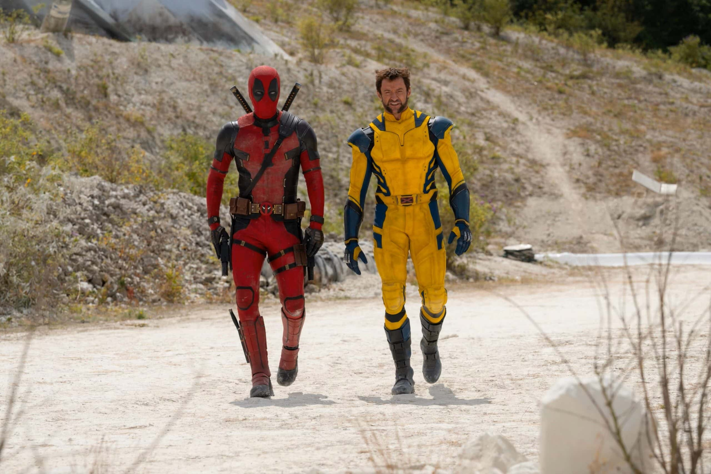
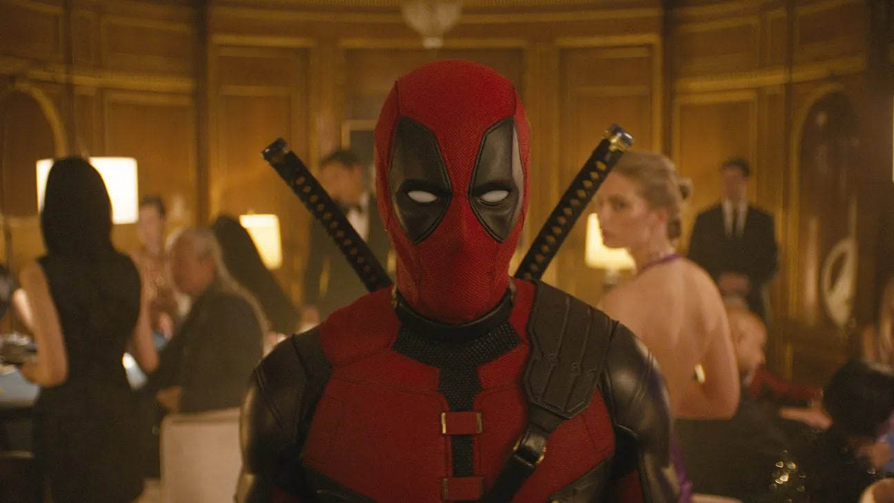
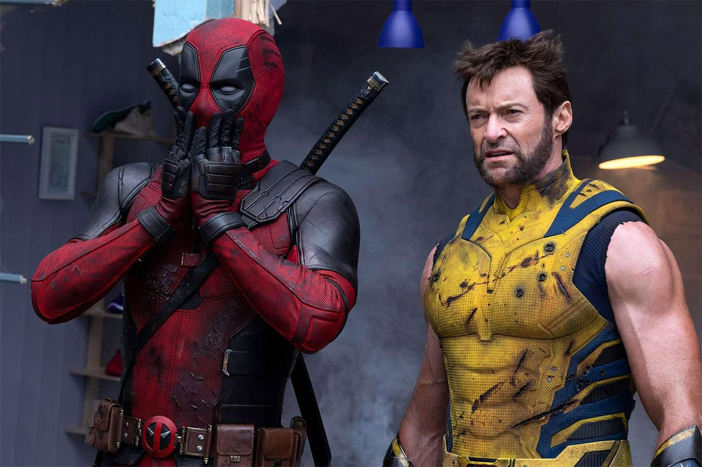
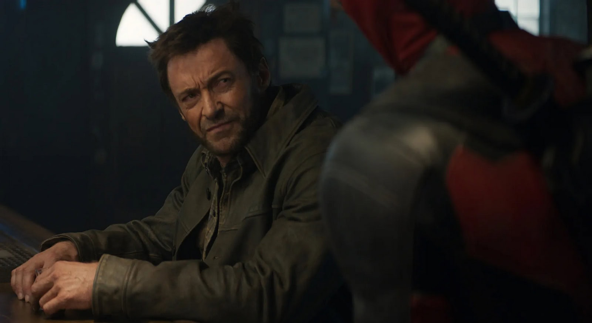
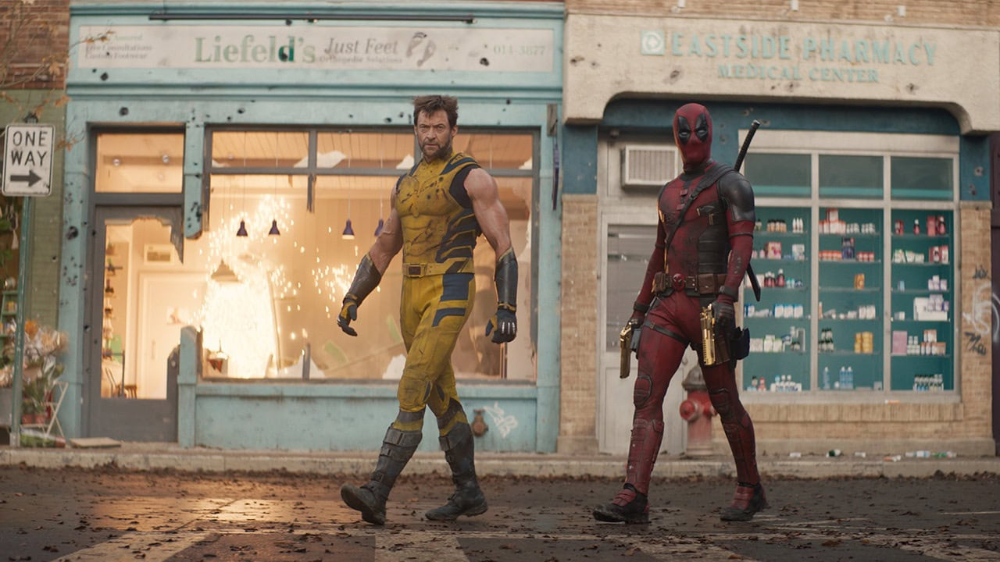
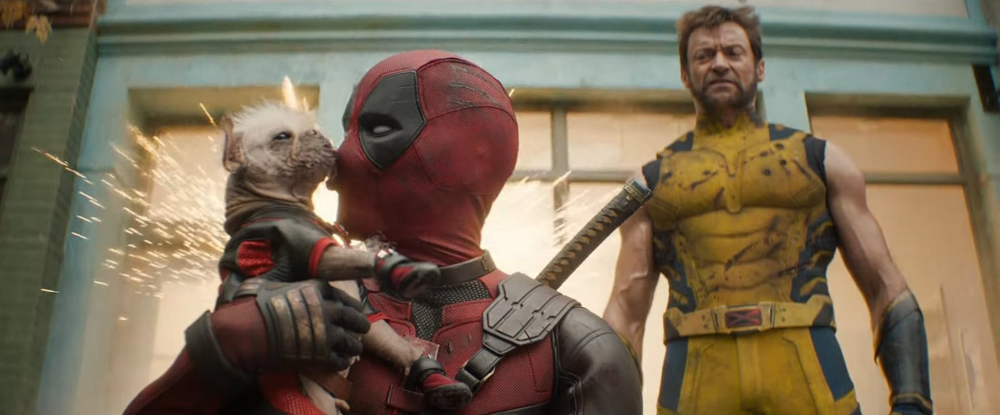

Рецензія на фільм «Дедпул і Росомаха» / Deadpool & Wolverine
Дедпул продовжує залишатися одним з найнезвичайніших супергероїв Marvel
завдяки тому, що все, що відбувається навколо нього – це просто комікс. Це
дозволяє персонажу постійно коментувати все навкруги кумедним чином, а
також потрапляти у нестандартні ситуації. Перша частина “Дедпула” /
Deadpool з Раяном Рейнольдсом зуміла перенести цю перевагу балакучого
найманця на великі екрани, до того ж у кровавому та лайливому рейтингу R.
За що її полюбили майже всі.
“Дедпул і Росомаха” / Deadpool & Wolverine мав підвищити ставки до
принципово нового рівня. Тут вам і перша поява Дедпула в офіційному
кіновсесвіті Marvel, і перший фільм MCU з рейтингом R, і повернення Гʼю
Джекмана до ролі Росомахи. Але виявилося, що це кіно настільки божевільне
та сумбурне, що його майже неможливо нормально дивитися.
Історія кіно починається зі спроби Вейда Вілсона (Раян Рейнольдс)
потрапити до Месників, чого він бажає дуже сильно. Але божевілля Дедпула
та його надмірна, провокативна балакучість не дають його мрії збутися.
Тому він закидає супергеройську кар’єру “у шафу” на багато років. Так би й
далі він продавав людям усілякий непотріб, але його знаходять представники
Управління Часовими Змінами (УЧЗ). Вони пропонують Дедпулу потрапити до
світу Месників MCU та стати частиною їхньої команди, але для цього світ
самого Вілсона має бути знищений. Єдина надія на порятунок – це Росомаха
(Гʼю Джекман), сама присутність котрого у всесвіті Дедпула має
стабілізувати ситуацію.

Щож Рейнольдс і Джекман дійсно подарували глядачам один з найкращих
кінодуетів в історії індустрії розваг. Дедпул і Росомаха – це максимально
різні персонажі, контраст між якими й робить їх настільки привабливими. До
того ж сама версія Росомахи тут відрізняється від минулих появ супергероя
на великих екранах, тобто усе це не перетворюється у самоповторювання та
самоцитування. Ймовірно, настільки гарній хімії між персонажами сприяє
дружба та почуття гумору акторів у реальному світі.

Щоб зрозуміти всі жарти “Дедпула і Росомахи” / Deadpool & Wolverine, вам
треба глибоко розбиратися у популярній культурі, кінокоміксах та акторах з
них за останні років 20. Фільм активно висловлюється про політику Fox та
Marvel з Disney, згадуючи навіть героїв, про яких лише планувалося зняти
фільми, але до справи так нічого й не дійшло. Тобто ви маєте бути постійно
у курсі новин й інтернет-дискусій зі сфери кіноміксів, щоб щиро сміятися
під час перегляду та розуміти всі захоплені крики фанатів, яких у залі
точно буде чимало.

“Дедпул і Росомаха” / Deadpool & Wolverine – це кіно виключно для фанатів
кінокоміксів, які здатні годинами сперечатися про найкращу версію
Людини-павука або режисерські особливості різних частин “Людей Ікс” /
X-Men. Тобто як порятунок поточної скрутної ситуації, що склалася у
кіновсесвіті Marvel, ця історія не працює. Вона не здатна залучити до
перегляду людей, які не знайомі з нюансами Marvel Cinematic Universe.
Навіть навпаки, фільм ніби відштовхує чужинців і нагадує вечірку “для
своїх”, де багато людей відчують себе зайвими.

У “Дедпула і Росомахи” / Deadpool & Wolverine дуже великі проблеми з
темпом і методами оповідання. Зрозуміло, що через балакучу натуру
головного героя не вийде зробити максимально серйозну драму, але знімальна
команда чомусь все одно намагається це зробити. У такі моменти з’являється
думка, що в одній стрічці поєднали два твори. І драматичні моменти точно
не прикрашають фінальний результат, а лише відволікають від шоу.
Адже нові пригоди Дедпула – це сатира та іронія над поточним станом справ
у індустрії кінокоміксів, де знайшлося місце навіть для критики концепції
мультивсесвіту та шпильок на адресу DC. Більше коментар про розваги, ніж
самостійний витвір мистецтва. Тому без належного бекграунду робити на
сеансі майже нічого.

Втім, якщо спробувати зібрати всі жарти та відсилання до купи з наміром
зрозуміти їх сенс, то спливає головна проблема “Дедпула і Росомахи” /
Deadpool & Wolverine – це відсутність щирості. Очікування щирості від
історії про Дедпула, для котрого немає нічого святого у світі, може
здатися трохи дивним, але проблема не в головному герої, а в позиціювання
кіно як продукту індустрії та його тональності. Бо Дедпул ніколи не
критикує Marvel та Disney занадто сильно.

Тож перша поява Дедпула у Marvel Cinematic Universe вийшла якоюсь мірою
такою самою, як і характер персонажа. Тобто божевільною, безструктурною та
абсурдною. У цьому також присутній своєрідний шарм, але не вимагайте від
кіно занадто багато. Якщо ви не фанат, то серце у вас навряд чи почне
битися частіше.